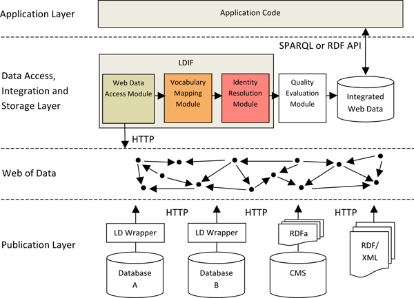
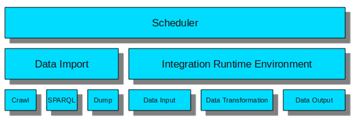

The LDIF - Framework translates heterogeneous Linked Data from the
Web into
a clean, local target representation while keeping track of data
provenance.
Download
LDIF
v0.3, released 2011-09-29
News
- 9/29/2011: Version 0.3 released. The third
LDIF release provides access modules for replicating datasets locally
via file download, crawling or SPARQL. It offers a URI minting feature
to produce descriptive URIs and a scheduler to launch data import and
integration jobs. Configuration files are validated via XML Schema before continuing execution.
- 8/25/2011: Version 0.2 released. The second
LDIF release provides improved performance (faster data loading,
parallelization of the data translation), smaller memory footprint, a
new N-Triples output module, new performance evaluation results for use
cases up to 100 million triples.
- 6/29/2011: Version 0.1 released. This alpha version provides for translating data that is represented using different source vocabularies into a single target vocabulary and for replacing different URIs that refer to the same real-world entity with a single target URI.
Contents
- About LDIF
- LDIF components
- Quick start
- Integration example: Using LDIF for integrating Life Science Data
- Integration example: Using LDIF for integrating Data from the Music Domain
- Performance Evaluation
- Configuration options
- Source code and development
- Version history
- Support and Feedback
- References
1. About LDIF
The Web of Linked Data grows rapidly and contains data from a wide range of different domains, including life science data, geographic data, government data, library and media data, as well as cross-domain datasets such as DBpedia or Freebase. Linked Data applications that want to consume data from this global data space face the challenges that:
- data sources use a wide range of different RDF vocabularies to represent data about the same type of entity.
- the same real-world entity, for instance a person or a place, is identified with different URIs within different data sources.
This usage of different vocabularies as well as the usage of URI aliases makes it very cumbersome for an application developer to write SPARQL queries against Web data which originates from multiple sources. In order to ease using Web data in the application context, it is thus advisable to translate data to a single target vocabulary (vocabulary mapping) and to replace URI aliases with a single target URI on the client side (identity resolution), before starting to ask SPARQL queries against the data.
Up-till-now, there have not been any integrated tools that help
application developers with these tasks. With LDIF, we try to fill this
gap and provide an an open-source Linked Data Integration Framework
that can be used by Linked Data applications to translate Web data and
normalize URI while keeping track of data provenance.
LDIF provides an expressive mapping language for translating data from
the various vocabularies that are used on the Web into a consistent,
local target vocabulary. LDIF includes an identity resolution component
which discovers URI aliases in the input data and replaces them with a
single target URI based on user-provided matching heuristics. For
provenance tracking, the LDIF framework employs the Named Graphs data
model.
The figure below shows the schematic architecture
of
Linked Data applications
that
implement the crawling/data warehousing pattern. The figure highlights
the steps of the data integration process that are currently
supported by LDIF.

2. LDIF Components
The LDIF Framework consists of the Runtime Environment and a set of pluggable modules. The pluggable modules are organized as data access components, a data transformation components and a data output components.

Currently, we have implemented the following modules:Web Data Access: Triple/Quad Dump Import
In order to get a local replication of datasets from the Web of Data the simplest way is to download a file containing the data set. The triple/quad dump import does exactly this, with the difference that LDIF generates a provenance graph for a triple dump import, whereas it takes the given graphs from a quad dump import as provenance graphs.
Web Data Access: Crawler Import
Datasets that can only be accessed via dereferencable URIs are a good candidate for a crawler. In LDIF we thus integrated LDSpider for crawl import jobs. The configuration files for crawl import jobs are specified in the configuration section. Each crawled URI is put into a seperate named graph for provenance tracking.
Web Data Access: SPARQL Import
Data sources that can be accessed via SPARQL are replicated by LDIF's SPARQL access module. The relevant data to be queried can be further specified in the configuration file for a SPARQL import job. Data from each SPARQL import job gets tracked by its own named graph.
Data Access: N-Quads Loader
The current version of LDIF expects input data to be represented as
Named
Graphs and be stored in N-Quads
format accessible by a URL. The graph URI is used for
provenance tracking. Provenance meta-information describing the graphs
can be provided within a specific provenance graph. The name of
this provenance graph can be set in the configuration file. LDIF does
not make any assumptions about the provenance vocabulary that is used
to describe the graphs, meaning that you can use your provenance
vocabulary of choice. Currently, the provenance information is just
copied to the final output. In future releases, we will use the
provenance information for data quality assessment and data fusion (see
Next Steps).
Transformation: R2R Data Translation
LDIF employs the R2R Framework to translate Web data that is represented using terms from different vocabularies into a single target vocabulary. Vocabulary mappings are expressed using the R2R Mapping Language. The language provides for simple transformations as well as for more complex structural transformations and property value transformations such as normalizing different units of measurement or complex string manipulations. The syntax of the R2R Mapping Language is very similar to the query language SPARQL, which eases the learning curve. The expressivity of the language enabled us to deal with all requirements that we have encountered so far when translatingLinked Data from the Web into a target representation (evaluation in [2]).
An overview and examples for mappings are given on the R2R website.
The specification
and user manual is provided as a separate document.
Transformation: Silk Identity Resolution
LDIF employs the Silk Link Discovery Framework to find different URIs that are used within different data sources to identify the same real-world entity. For each set of duplicates which have been identified by Silk, LDIF replaces all URI aliases with a single target URI within the output data. In addition, it adds owl:sameAs links pointing at the original URIs, which makes it possible for applications to refer back to the data sources on the Web. If the LDIF input data already contains owl:sameAs links, the referenced URIsare normalized accordingly (optional, see configuration). Silk is a flexible identity resolution framework that allows the user to specify identity resolution heuristics which combine different types of matchers using the declarative Silk - Link Specification Language.
An overview and examples can be found on the Silk website.
Data Output: N-Quads Writer
The N-Quads writer dumps the final output of the integration
workflow into a single N-Quads file. This file contains the translated
versions of all graphs from the input graph set as well as the content
of the provenance graph and sameAs-links.
Data Output: N-Triples Writer
The N-Triples writer dumps the final output of the integration
workflow into a single N-Triples file.
Runtime Environment
The Runtime Environment manages the data flow between the various stages and the caching of the intermediate results. In order to parallelize the data processing, the data is partitioned into entities prior to supplying it to a transformation module. An entity represents a Web resource together with all data that is required by a transformation module to process this resource. Entities consist of one or more graph paths and include a provenance URI for each node. Each transformation module specifies which paths should be included into the entities it processes. Splitting the work into fine-granular entities, allows LDIF to parallelize the work into multiple threats and will, in the next release, allow thework to be parallelized on multiple machines using Hadoop. For the LDIF V0.3 release, we have implemented only an in-memory version of the runtime environment. This implementation keeps all intermediate results in memory. It is very fast but scales only depending on the amount of memory available. For instance, integrating 25 million triples required 5 GB memory within one of our experiments.
Next steps for LDIF
Over the next months, we plan to extend LDIF along the
following lines:
- Implement a Hadoop Version of the Runtime Environment in order to be able to scale to really large amounts of input data. Processes and data will be distributed over a cluster of machines.
- Add a Data Quality Evaluation and Data Fusion Module which allows Web data to be filtered according to different data quality assessment policies and provides for fusing Web data according to different conflict resolution methods.
- Flexible integration workflow. Currently the integration flow is static and can only be influenced by predefined configuration parameters. We plan to make the workflow and its configuration more flexible in order to make it easier to include additional modules that cover other data integration aspects.
3. Quick start
In order to experiment with LDIF follow these steps:
- Download the latest release (download link at the top of this page)
- Unpack the archive to an arbitrary location
- To run the command line tool type the following in the root
directory of LDIF:
bin/ldif <path-to-scheduler-config-file>For details about the configuration file and parameters, see Section 6. A detailed example is given next.
bin\ldif.bat <path-to-scheduler-config-file>
4. Example: Using LDIF to integrate Life Science Data
This example shows how LDIF is applied to integrate data originating from five Life Science sources.
The example is taken from a joined project with Vulcan Inc.
and ontoprise GmbH about
extending Semantic
Media Wiki+ with a Linked Data Integration Framework.
In this example, the following data sources are translated into a
common Wiki ontology:
- Allen Mouse Brain Atlas is a growing collection of online public resources integrating extensive gene expression and neuroanatomical data.
- KEGG GENES, a collection of gene catalogs for all complete genomes generated from publicly available resources, mostly NCBI RefSeq
- KEGG Pathway, a collection of pathway maps representing knowledge on the molecular interaction and reaction networks
- PharmGKB, which provides data on gene information, disease and drug pathways, and SNP variants
- Uniprot, which provides information on protein sequence and function
The following mapping file provides for translating the vocabularies used by the source datasets into the Wiki ontology.
- R2R mapping file: ALL-toWiki.r2r.ttl
The following Silk identity resolution heuristics are used to find genes and other expressions that are described in multiple datasets.
To run the example, please download LDIF and use the following LDIF
configuration. The configuration options are explained in the Section Configuration below.
<integrationJob>
<properties>life-science.properties</properties>
<sources>sources</sources>
<linkSpecifications>linkSpecs</linkSpecifications>
<mappings>mappings</mappings>
<output>output.nq</output>
</integrationJob>
Execution instructions:
- Change into the LDIF root dir.
- Under Unix type:
bin/ldif-integrate examples/life-science/integration-config.xml
bin\ldif-integrate.bat examples\life-science\integration-config.xml
Example Data Translation
In the following, we explain the data translation that is performed for the example of one entity that is described in two input datasets:
- Example input (reduced
to two source datasets, represented using the TriG Syntax):
01: @prefix aba-voc: <http://brain-map.org/gene/0.1#> .
02: @prefix rdfs: <http://www.w3.org/2000/01/rdf-schema#> .
03: @prefix uniprot: <http://purl.uniprot.org/core/> .
04:
05: <file:///aba_mouse_20101010_1000.nq> {
06: <http://brain-map.org/mouse/brain/Oprk1.xml> aba-voc:entrezgeneid "18387" ;
07: aba-voc:gene-aliases _:Ab12290 .
08: _:Ab12290 <http://brain-map.org/gene/0.1#aliassymbol> "Oprk1" .
09: }
10:
11: <file:///datasets/uniprot-organism-human-reviewed-complete_1000.nq> {
12: <http://purl.uniprot.org/uniprot/P61981> rdfs:seeAlso <http://purl.uniprot.org/geneid/18387> .
13: <http://purl.uniprot.org/geneid/18387> uniprot:database "GeneID" .
14: <http://purl.uniprot.org/uniprot/P61981> uniprot:encodedBy <file:///storage/datasets/uniprot-organism-human-reviewed-complete.rdf#_503237333438003B> .
15: }
- Example output :
01: @prefix smwprop: <http://mywiki/resource/property/> .
02: @prefix xsd: <http://www.w3.org/2001/XMLSchema#> .
03:
04: <file:///aba_mouse_20101010_1000.nq> {
05: <http://brain-map.org/mouse/brain/Oprk1.xml> smwprop:EntrezGeneId "18387"^^xsd:int .
06: <http://brain-map.org/mouse/brain/Oprk1.xml> smwprop:GeneSymbol "Oprk1"^^xsd:string .
07: }
08:
09: <file:///datasets/uniprot-organism-human-reviewed-complete_1000.nq> {
10: <http://brain-map.org/mouse/brain/Oprk1.xml> smwprop:EntrezGeneId "18387"^^xsd:int .
11: <http://brain-map.org/mouse/brain/Oprk1.xml> owl:sameAs <file:///storage/datasets/uniprot-organism-human-reviewed-complete.rdf#_503237333438003B> .
12: }
The example input and output needs some explanation:
- There are two source graphs, each containing data from a different source: ABA (input: line 5 to 9) and Uniprot (input: line 11 to 15).
Identity resolution:
- Both graphs contain data about the same entity:
- In the ABA dataset the entity is identified using the URI <http://brain-map.org/mouse/brain/Oprk1.xml> (input: line 6)
- In the Uniprot dataset the entity is identified using the URI
<file:///storage/datasets/uniprot-organism-human-reviewed-complete.rdf#_503237333438003B> (input: line 14) - Since the Silk identity resolution heuristic concludes that both URIs identify the same entity, the both URIs are replaced in the output with a single URI (in this case the ABA one, output: lines 5, 6 and 10).
- The rewritten URI is linked by owl:sameAs to the original URI
(output: line 11).
Data Translation:
- In the target vocabulary Entrez Gene IDs should be represented using the smwprop:EntrezGeneId property. Property values should be represented as xsd:Integers.
- Thus, the aba-voc:entrezgeneid triple in the first graph (line 6) is translated into a smwprop:EntrezGeneId triple in the output data (line 5) and a datatype URI is added to the literal.
- The smwprop:GeneSymbol triple in line 6 of the output is generated by a structural transformation out of the two triples in lines 7 and 8 of the input data.
- In the Uniprot case the smwprop:EntrezGeneId value was extracted from the URI string <http://purl.uniprot.org/geneid/18387> (input: line 12).
- The quad with the property smwprop:EntrezGeneId on line 10 in the output was produced by a complex mapping that had to consider all three quads of the input (lines 12-14).
5. Example: Using LDIF for integrating Data from the Music Domain
This example shows how LDIF is applied to integrate data originating from the following sources containing data from the music domain:
- DBpedia
- Freebase
- MusicBrainz (at Talis)
- BBC Music
The following configuration files are used for importing the different sources
- DBpedia Dump
- Freebase Crawl
- MusicBrainz Sparql-MusicArtist , Sparql-Label, Sparql-Record
- BBC Music Sparql-MusicArtist , Sparql-Record, Sparql-Birth, Sparql-Death
- R2R mapping file: mappings.ttl
The following Silk identity resolution heuristics are used to find genes and other expressions that are described in multiple datasets:
In order to run the example, please download LDIF and run the following commands:
- Change into the LDIF root dir.
- Under Unix type:
bin/ldif examples/music/ldif-config/schedulerConfig.xml
bin\ldif.bat examples\music\ldif-config\schedulerConfig.xmlPlease note that the execution of the import jobs can take several days, mainly because of the crawl job.
6. Performance Evaluation
We regularly carry out performance evaluations. For more details and the latest results please visit our Benchmark results page.
7. Configuration Options
This section describes how an LDIF configuration files look like and which parameters you can modify to change the runtime behavior of LDIF.
Schedule Job Configuration
A Schedule Job updates the local sources and it is configured with an XML document, whose structure is described by this XML Schema.
A typical configuration document looks like this:
<scheduler>
<properties>scheduler.properties</properties>
<dataSources>datasources</dataSources>
<importJobs>importJobs</importJobs>
<integrationJobs>integration-config.xml</integrationJob>
<dumpLocation>dumps</dumpLocation>
</scheduler>
It has the following elements:
- properties - the path to a Java properties file for configuration parameters, see below for more details;
- dataSources - a directory containing the Data Sources configurations;
- importJobs - a directory containing the Import Jobs configurations;
- integrationJob - a document containing the Integration Job configurations;
- dumpLocation - a directory where the local dumps should be loaded.
All the paths are relative to the config file location.
Configuration Properties
In the Schedule Job configuration file you can specify a (Java) properties file to further tweak certain parameters concerning the workflow. Here is a list with all properties that can be set at the moment and the possible values for each property:
provenanceGraphURI
Specify the graph containing the provenance information. As of LDIF V0.3, Quads from this graph are only written to the final output dataset, but are processed any further in the integration workflow. Default graph name: http://www4.wiwiss.fu-berlin.de/ldif/provenanceprovenanceGraphURI = http://www4.wiwiss.fu-berlin.de/ldif/provenance
oneTimeExecution
If _true_, the Scheduler executes all the Jobs at most once. Import Jobs are evaluated first and then (as all of these are finished) the Integration Job starts. Default: falseoneTimeExecution = true | false
Integration Job Configuration
An Integration Job is configured with an XML document, whose structure is described by this XML Schema.
The current structure is very simple because the integration flow is static at the moment - something that will change in future releases.
A typical configuration document looks like this:
<integrationJob>
<properties>test.properties</properties>
<sources>sources</sources>
<linkSpecifications>linkSpecs</linkSpecifications>
<mappings>mappings</mappings>
<output>output.nq</output>
<runSchedule>daily</runSchedule>
</integrationJob>
It has the following elements:
- properties - the path to a Java properties file for configuration parameters, see below for more details;
- sources - a directory containing the source data sets, these files in this directory must be in N-Quads format and may be compressed (.gz, .zip or .bz2);
- linkSpecifications - a directory containing the Silk link specifications;
- mappings - a directory containing the R2R mappings;
- output - the name of the file to which the output should be written;
- runSchedule - how often the integration is expected to be run.
All the paths are relative to the config file location. In this case there is a root directory with the config file and the test.properties file in it. Furthermore the following directories would be nested in the root directory: linkSpecs, sources and mappings. Datasets have to be in a local directory.
Configuration Properties
In the Integration Job configuration file you can specify a (Java) properties file to further tweak certain parameters concerning the integration workflow. Here is a list with all properties that can be set at the moment and the possible values for each property:
output
Specify if all input quads from the input should be included in the output file or only the quads that were mapped/translated by LDIF. Default: mapped-onlyoutput = all | mapped-only
rewriteURIs
Specify if URI aliases in the input data should be rewritten to a single target URI in the output data. Default: truerewriteURIs = true | false
provenanceGraphURI
Specify the graph containing the provenance information. As of LDIF V0.3, Quads from this graph are only written to the final output dataset, but are processed any further in the integration workflow. Default graph name: http://www4.wiwiss.fu-berlin.de/ldif/provenanceprovenanceGraphURI = http://www4.wiwiss.fu-berlin.de/ldif/provenance
validateSources
Source datasets, R2R mappings and Silk link specifications are all validated before starting with the actual integration. Since the syntax validation of the sources (N-Triples / N-Quads files) takes some time (about 15s/GB), if you already know that they are correct, it is possible to disable this step by setting the property to false. Default: truevalidateSources = true | false
useExternalSameAsLinks
Besides discovering equal entities in the identity resolution phase, LDIF also offers the opportunity to input these relationships in form of owl:sameAs links. The NT/N-Quads file with these sameAs-links has to be placed in the source directory with the other datasets. If you don’t want to use sameAs-links from the input data, set this property to false. Default: trueuseExternalSameAsLinks = true | false
outputFormat
Although the default output format is N-Quads, LDIF also offers a triple output as N-Triple. Default: nqoutputFormat = nq | nt
uriMinting
Specify if output resources should be given an URI within the target namespace. URI minting. Default: falseuriMinting = true | false
uriMintNamespace
Specify the namespace into which output resources are translated, if URI minting is enabled. Default: http://www4.wiwiss.fu-berlin.de/ldif/resource/uriMintNamespace = http://www4.wiwiss.fu-berlin.de/ldif/resource/
uriMintLabelPredicate
Specify the predicates of the resources to translate which are defining the local name of the URI, may be more than one, separated by blank spaces.uriMintLabelPredicate = http://www4.wiwiss.fu-berlin.de/ldif/property/ID http://www4.wiwiss.fu-berlin.de/ldif/property/Label
Import Job Configuration
An Import Job is configured with an XML document, whose structure is described by this XML Schema.
LDIF supports four different mechanisms to import external data:
- Quad Import Job – import N-Quad dumps
- Triple Import Job – import RDF/N-Triple dumps
- Crawl Import Job – import by dereferencing URIs as RDF data, using the LDspider Web Crawling Framework
- SPARQL Import Job – import by quering a SPARQL endpoint
A typical config file for a Quad Import Job looks like this:
<importJob xmlns="http://www4.wiwiss.fu-berlin.de/bizer/ldif">
<internalId>dBpedia.0</internalId>
<dataSource>dBpedia</dataSource>
<refreshSchedule>daily</refreshSchedule>
<quadImportJob>
<dumpLocation>http://dbpedia.org/dump.nq</dumpLocation>
</quadImportJob>
</importJob>
Provenance Metadata
Provenance metadata structure is described by this ontology.
For each imported graph, provenance information will contain:
- import date and time,
- chosen import type,
- original location (only for Quad and Triple Import Jobs).
A typical provenance graph for a Quad Import Job looks like this:
<http://dbpedia.org/graphA> <http://www.w3.org/1999/02/22-rdf-syntax-ns#type> <http://www4.wiwiss.fu-berlin.de/ldif/ImportedGraph> <http://www4.wiwiss.fu-berlin.de/ldif/provenance> . <http://dbpedia.org/graphA> <http://www4.wiwiss.fu-berlin.de/ldif/hasImportJob> _:blanknode <http://www4.wiwiss.fu-berlin.de/ldif/provenance> . <http://dbpedia.org/graphB> <http://www.w3.org/1999/02/22-rdf-syntax-ns#type> <http://www4.wiwiss.fu-berlin.de/ldif/ImportedGraph> <http://www4.wiwiss.fu-berlin.de/ldif/provenance> . <http://dbpedia.org/graphB> <http://www4.wiwiss.fu-berlin.de/ldif/hasImportJob> _:blanknode <http://www4.wiwiss.fu-berlin.de/ldif/provenance> . _:blanknode <http://www.w3.org/1999/02/22-rdf-syntax-ns#type> <http://www4.wiwiss.fu-berlin.de/ldif/ImportJob> <http://www4.wiwiss.fu-berlin.de/ldif/provenance> . _:blanknode <http://www4.wiwiss.fu-berlin.de/ldif/importId> "dBpedia.0" <http://www4.wiwiss.fu-berlin.de/ldif/provenance> . _:blanknode <http://www4.wiwiss.fu-berlin.de/ldif/lastUpdate> "2011-09-21T19:01:00-05:00"^^<http://www.w3.org/2001/XMLSchema#dateTime> <http://www4.wiwiss.fu-berlin.de/ldif/provenance> . _:blanknode <http://www4.wiwiss.fu-berlin.de/ldif/hasDatasource> "dBpedia" <http://www4.wiwiss.fu-berlin.de/ldif/provenance> . _:blanknode <http://www4.wiwiss.fu-berlin.de/ldif/hasImportType> "quad" <http://www4.wiwiss.fu-berlin.de/ldif/provenance> . _:blanknode <http://www4.wiwiss.fu-berlin.de/ldif/hasOriginalLocation> "http://mes.smw-lde-eu.s3.amazonaws.com/dBpedia_dump.nt.bz2" <http://www4.wiwiss.fu-berlin.de/ldif/provenance> .
Data Source Configuration
A Data Source is configured with an XML document, whose structure is described by this XML Schema.
<dataSource>
<label>dBpedia</label>
<description>DBpedia ist an RDF version of Wikipedia</description>
<homepage>http://dbpedia.org</homepage>
</dataSource>
8. Source Code and Development
The latest source code is available from the LDIF development page on Assembla.com.
The framework can be used under the terms of the Apache Software License.
9. Version history
| Version | Release log | Date |
|---|---|---|
| 0.3 | Access module support (dataset dump, SPARQL, crawling) Scheduler for running import and integration tasks automatically Configuration file XML schemas for validation URI minting |
9/29/2011 |
| 0.2 | R2R data translation tasks are now executed in parallel Perform source syntax validation before loading data (optional) Support for external sameAs links RDF/N-Triples data output module Support for bzip2 source compression Improved loading perfomance Memory usage improvements: caching factum rows and string interning only for relevant data |
8/25/2011 |
| 0.1 | Intial release of LDIF | 6/29/2011 |
10. Support and Feedback
For questions and feedback please use the LDIF Google Group.
11. References
- Tom Heath, Christian Bizer: Linked Data: Evolving the Web into a Global Data Space. Synthesis Lectures on the Semantic Web: Theory and Technology, Morgan & Claypool Publishers, ISBN 978160845431, 2011 ( Free HTML version ).
- Christian Bizer, Andreas Schultz: The R2R Framework: Publishing and Discovering Mappings on the Web ( Slides ). 1st International Workshop on Consuming Linked Data (COLD 2010), Shanghai, November 2010.
- Julius Volz, Christian Bizer, Martin Gaedke, Georgi Kobilarov: Discovering and Maintaining Links on the Web of Data ( Slides ). International Semantic Web Conference (ISWC2009), Westfields, USA, October 2009.
- Robert Isele, Anja Jentzsch, Christian Bizer: Silk Server - Adding missing Links while consuming Linked Data ( Slides ). 1st International Workshop on Consuming Linked Data (COLD 2010), Shanghai, November 2010.
- Andreas Schultz, Andrea Matteini, Robert Isele, Christian Bizer,
Christian Becker: LDIF
- Linked Data Integration Framework. 2nd International Workshop on
Consuming Linked Data, Bonn, Germany, October 2011.
12. Acknowledgments
This work was supported in part by Vulcan Inc. as part of its Project Halo and by the EU FP7 project LOD2 - Creating Knowledge out of Interlinked Data (Grant No. 257943).